Master the Machine
Automatización • IA • Industria 4.0 • Transformación Digital
EDICIÓN ESPECIAL
No es tecnología. Es ventaja operativa.
Es quién opera mejor: con trazabilidad, decisiones rápidas y menos pérdida invisible.
En Colombia hay empresas que hacen lo imposible para producir, vender y cumplir. Pero muchas operan con un enemigo silencioso: la falta de sistema. No es falta de talento. Es falta de trazabilidad.
Inventarios sin control, documentación que se traspapela, procesos que dependen de una persona clave y decisiones tomadas con información incompleta. La consecuencia no siempre se ve en un balance inmediato, pero se siente todos los días: compras duplicadas, tiempos muertos, retrasos y equipos apagando incendios.
Esta edición de Converxus Industry Intelligence nace para mostrar el panorama real de la automatización. No desde la teoría, sino desde la operación. Aquí encontrarás dos capas: la global y la local.
Casos reales con evidencia: un inventario que pasó de búsquedas de horas a minutos; un bot que entregó documentación crítica en dos minutos cuando una obra estaba a punto de detenerse; y CP-SMART, un avance industrial que sorprendió por su control remoto desde el celular.
Índice
- Panorama Internacional: El mundo sin pausa4
- Estrategia: Automatización por dolor6
- Reporte Regional: Colombia 20268
- Identidad: Método y Propósito Converxus10
- Caso 2025: Inventario Crítico14
- Caso 2025: Bot Documental20
- Tecnología: CP-SMART26
- Proyecciones: Jarvis & El Futuro30

REPORTE 2026
EL MUNDO
SIN PAUSA
World Economic Forum
PANORAMA INTERNACIONAL
Inteligencia Artificial: de juguete a herramienta
En 2026 la conversación cambió. Ya no se trata de “probar IA”, sino de integrarla en procesos reales. Las empresas que están ganando no dependen de herramientas aisladas, sino de sistemas completos que conectan datos, automatización y decisión.
El verdadero salto ocurre cuando la operación deja de depender de la memoria de las personas y empieza a depender de reglas, trazabilidad y flujos claros. Ahí la IA deja de ser experimento y se convierte en infraestructura.
Este enfoque acelera la convergencia industrial: sensores, monitoreo remoto, inventarios trazables, bots documentales y agentes que ejecutan tareas repetitivas con consistencia. La ventaja no es “tener IA”. La ventaja es diseñar el sistema operativo de la empresa.
Dato Crítico
El retorno más rápido aparece cuando automatizas primero lo que afecta todos los días: inventario, documentación y monitoreo.
La automatización que funciona empieza por dolor
Automatizar sin priorizar es el error más común. Primero se debe entender dónde se pierde tiempo, dinero y control. Cuando ese mapa existe, la automatización deja de ser experimento y se convierte en sistema.
Un bot no es un chat: es continuidad operativa.
Un tablero no es una pantalla: es decisión.
Checklist Editorial
- • Identificación de cuellos de botella por falta de datos.
- • Auditoría de procesos dependientes de memoria humana.
- • Medición de tiempos de respuesta en urgencias documentales.
- • Verificación de trazabilidad en activos críticos.
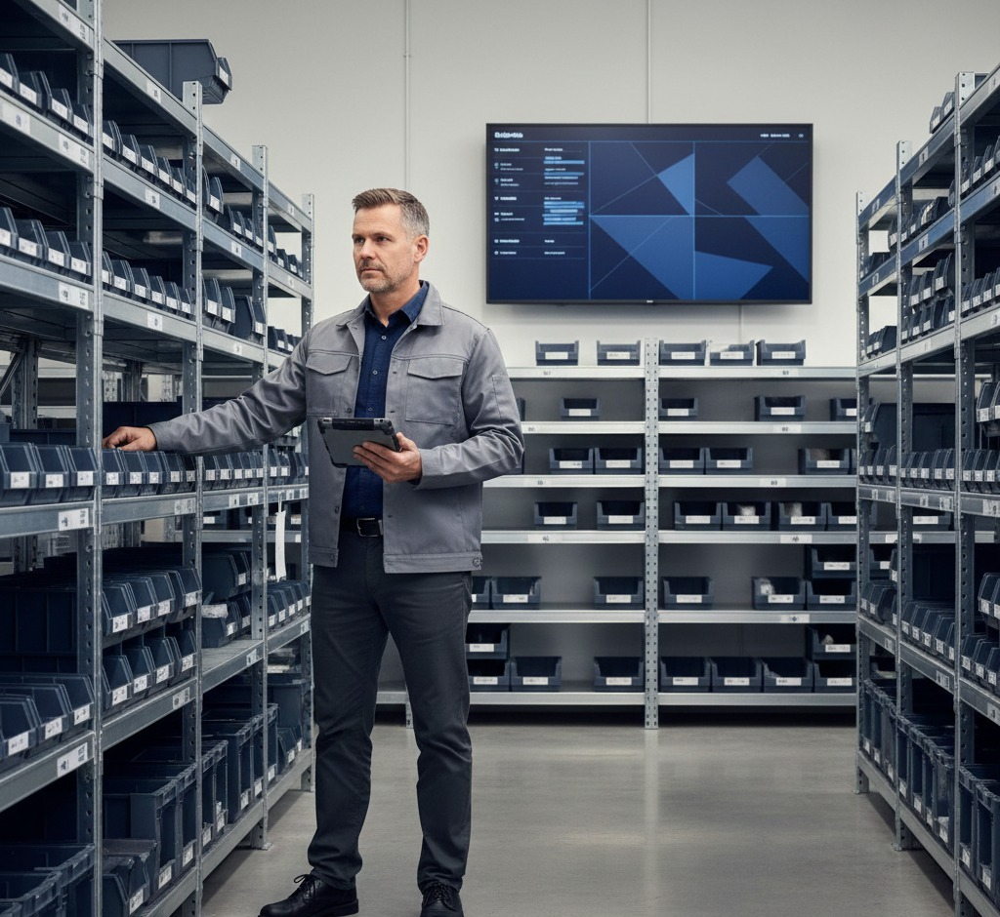
Hyperautomation en PYMES: sí se puede
Una pyme no necesita digitalizarlo todo de golpe. Necesita atacar lo que duele y construir un sistema que resista el crecimiento sin volverse caos.
FASE 1
Orden: Inventario, documentación, permisos.
FASE 2
Integración: Notificaciones, reportes.
FASE 3
Inteligencia: Alertas, agentes, predicción.
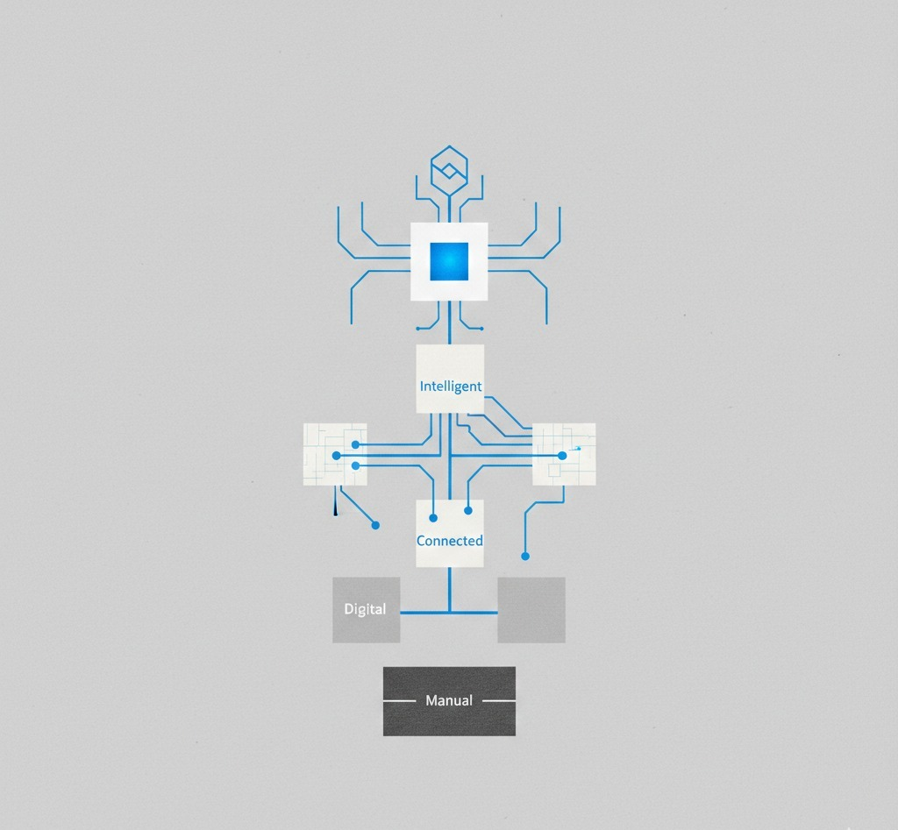
REPORTE REGIONAL
Colombia 2026: transformación digital como estrategia
Colombia tiene una oportunidad: competir por agilidad. Cuando una empresa adopta trazabilidad, reduce pérdida invisible y responde más rápido. Por eso la transformación digital no se traduce en ‘tener herramientas’, sino en operar con información confiable.
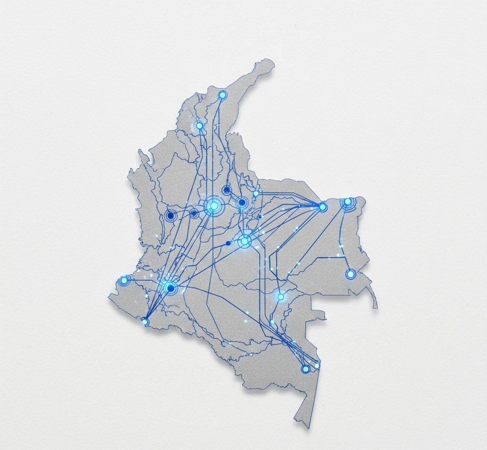
La madurez digital en el país se está dividiendo en cuatro niveles claros. Las empresas que se queden en los niveles manuales enfrentarán costos operativos insostenibles para el 2027.
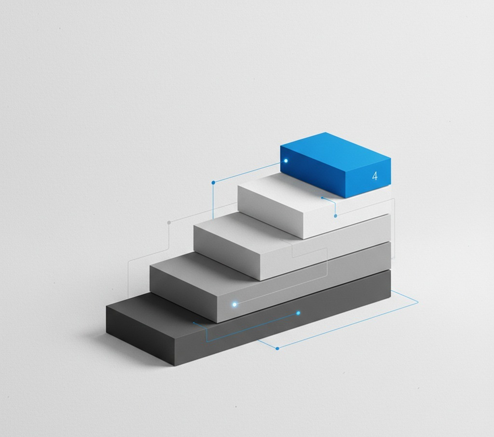
Proyección 2026
El 65% de las PYMES industriales en Colombia habrán integrado al menos un flujo de automatización crítica para final del año.
Método Converxus: Ingeniería de Resultados
Nuestra metodología no es lineal, es un ciclo de mejora continua diseñado para la realidad de la planta y la oficina. No instalamos software, desplegamos soluciones.
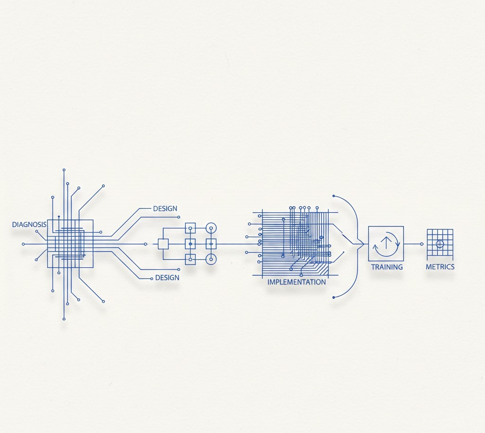
Identidad: Converger para Controlar
Converxus nace de la intersección entre el hardware industrial y la inteligencia de software. Somos el nexo entre los datos crudos y la decisión estratégica.
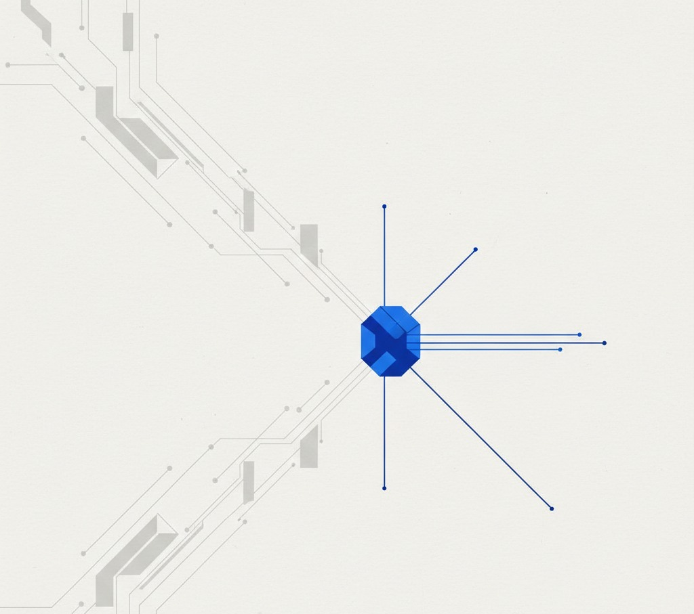
Anderson Estrada
Ingeniero de Software • Prompt Engineer • Arquitectura Digital
Anderson lidera la visión digital: convertir operaciones manuales en sistemas medibles. Su enfoque une automatización, integración y claridad administrativa.
Para él, las herramientas no son el fin, sino la infraestructura sobre la que se construye la continuidad de un negocio.
Alejandro Triana
Ingeniero Mecatrónico • Ejecución • Mente Maestra Industrial
Alejandro lidera la ejecución industrial. Su mentalidad está hecha para máquinas, señales, mantenimiento y operación en campo.
Donde otros ven complejidad técnica, él ve variables controlables. Su fortaleza es traducir necesidades industriales a soluciones reales que funcionen en el mundo físico.
CASO DE ESTUDIO 01
Inventario 2025: Del Caos al Control Total
Todo empezó como empiezan muchos problemas operativos: nadie lo veía como ‘crítico’… hasta que se volvió caro. Herramientas perdidas, consumibles comprados dos veces, equipos que ‘aparecían’ cuando ya se había vuelto a comprar.
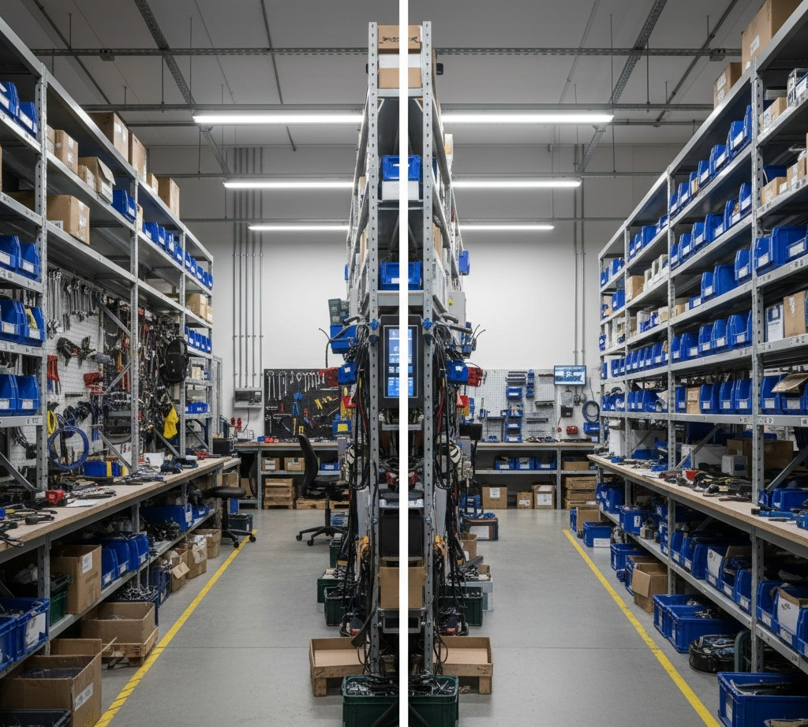
El 'Antes': Pérdida Invisible
Cuando nadie sabe con certeza qué hay, la operación pierde precisión. Buscar un ítem podía tomar desde 30 minutos hasta 3 horas en días críticos. Eso no solo costaba dinero, costaba ritmo.
El síntoma más claro era el mismo todas las semanas: el inventario no era confiable. Y si el inventario no es confiable, la empresa opera con suposiciones.
Intervención: Sistema sobre Lista
La solución no fue ‘digitalizar por moda’. Se diseñó una lógica de activos: categorías claras, trazabilidad, entradas/salidas, responsables y reglas de auditoría. Lo más importante fue convertir el inventario en un hábito operativo.
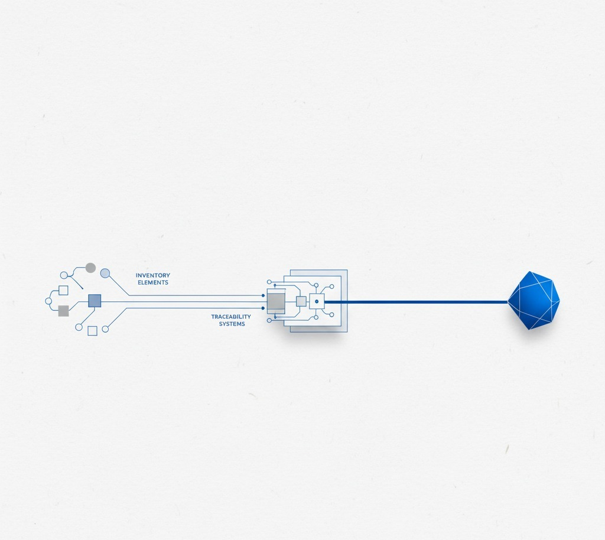
Resultados Medibles
El cambio se sintió rápido, pero lo importante fue medirlo. Antes, encontrar un producto tomaba hasta 3 horas. Después, bajó a 2 minutos.
Impacto en Bottom Line
Reducción del 40% en compras de consumibles duplicadas en los primeros 6 meses.
Evidencia Operativa
La arquitectura del sistema permite que la información fluya sin fricciones. Aquí la prueba técnica de la automatización en segundo plano.

Flujo de sincronización de activos en tiempo real.
Lección Aplicable
Si tu empresa tiene herramientas, activos, repuestos o consumibles, tu inventario es el espejo de tu operación. Si es caos, la operación será caos.
La automatización exitosa no reemplaza al almacenista, le da superpoderes de precisión.
1. Eliminar hojas de papel sueltas.
2. Unificar base de datos de activos.
3. Establecer protocolo de salida obligatorio.
CASO DE ESTUDIO 02
Bot Documental: Continuidad en Campo
En este caso, el equipo llegó a sitio y control de seguridad exigió permisos críticos. El equipo asumió que ya se habían enviado, pero no estaban en la base de datos de portería.
Resolver esto antes implicaba llamadas, esperar a la persona encargada, buscar archivos y cruzar dedos. Esta vez no.
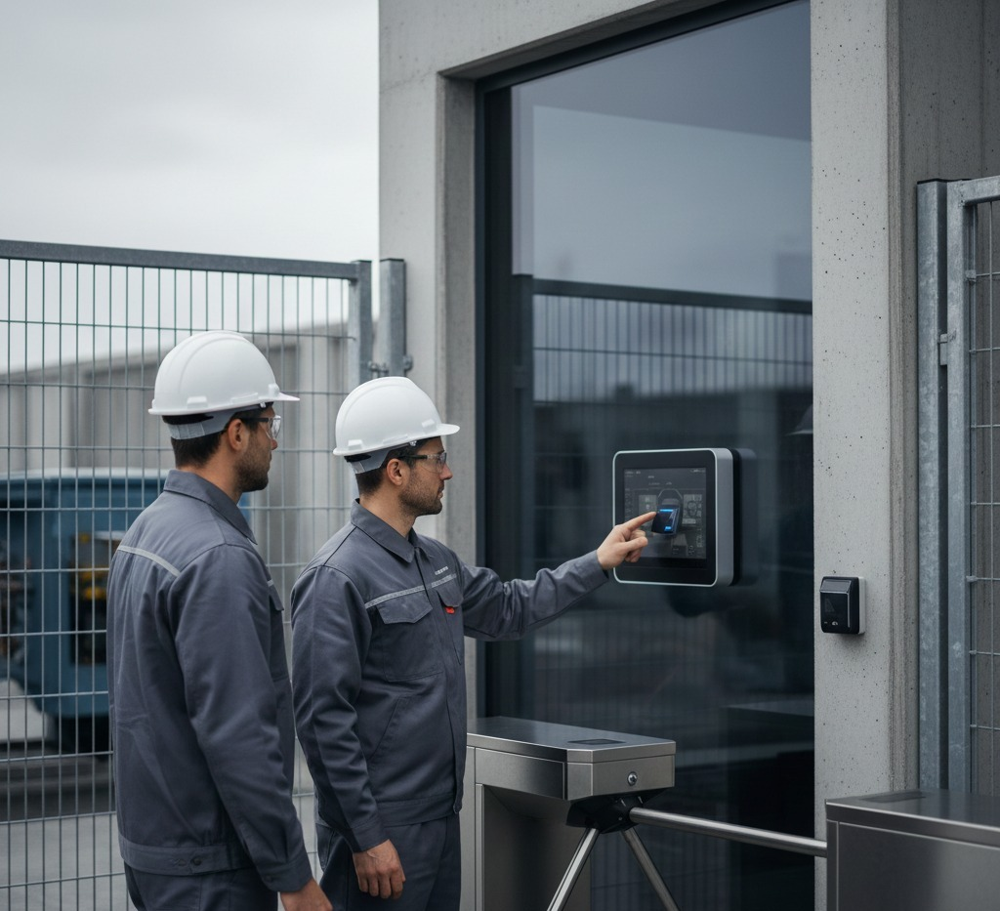
La Urgencia Resuelta
El bot respondió en menos de dos minutos. La obra continuó. Sin estrés. Sin improvisación. La diferencia entre una tarde perdida y una ejecución exitosa.
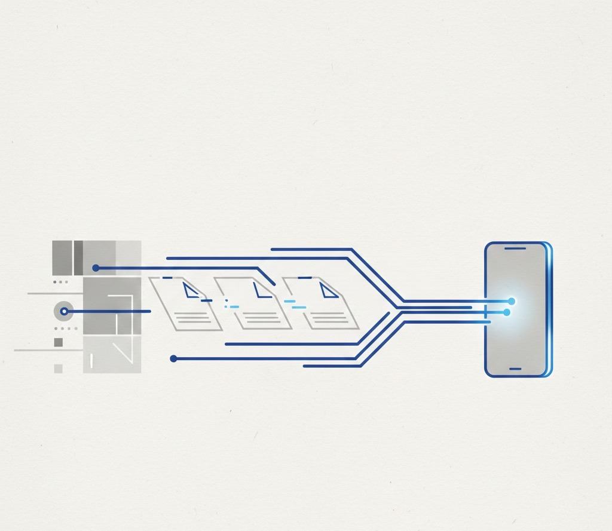
Métrica de Éxito
Disponibilidad documental 24/7 sin recurrir a personal administrativo fuera de horario.
Mecánica del Sistema
El valor de un bot documental no es ‘chatear’. Es centralizar acceso. Funciona cuando los documentos están ordenados, las reglas son claras y el canal es inmediato como Telegram o WhatsApp.
Métricas de Agilidad
El tiempo promedio de entrega de un paquete documental pasó de 45 minutos (tiempo humano promedio) a 40 segundos (tiempo bot).
Evidencia: Telegram Bot
Prueba real de interacción. El usuario solicita, el sistema valida y entrega. Todo auditado y registrado automáticamente.

Interfaz de usuario simple para procesos complejos detrás.
Continuidad Operativa
En infraestructura, los minutos valen oro. Diseñar sistemas que no duermen es la única forma de garantizar que el cumplimiento documental no sea un obstáculo para la ingeniería.
Conclusión Bot
La automatización documental es la capa de seguridad invisible de cualquier operación en campo.
TECNOLOGÍA INDUSTRIAL
CP-SMART: Monitoreo Remoto
La sorpresa no fue el dato. Fue ver el control completo desde el celular.
Antes, saber el estado de un rectificador o una hidroeléctrica implicaba una visita física. Hoy es visibilidad total inmediata.

Control en la Palma de la Mano
No se trata de comodidad. Se trata de capacidad de maniobra. Poder apagar, encender o ajustar parámetros críticos en tiempo real desde cualquier lugar del mundo.

Dashboard de Analítica
Del dato crudo a la inteligencia industrial. CP-SMART no solo muestra el hoy, ayuda a predecir el comportamiento del equipo para el mañana.

Evolución de Hardware
Instalación limpia, robusta y conectada. Es la transición definitiva de la industria analógica a la industria inteligente.

EL FUTURO
Del Dato Industrial a la Decisión
Converxus transforma cualquier señal útil en trazabilidad. Cuando las variables críticas se registran, la empresa deja de operar por intuición.
Proyecto Jarvis: Agentes Autónomos
Jarvis representa la cúspide de nuestra visión: el siguiente paso en la automatización administrativa. No es un simple chatbot; es un motor de ejecución.
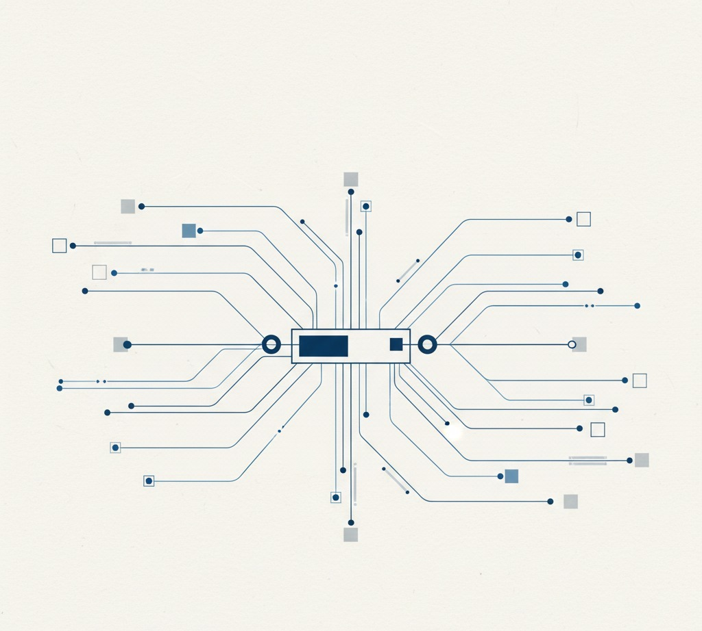
Agentes inteligentes capaces de operar procesos completos, cruzando datos de inventario, solicitudes de campo y validación documental en milisegundos. Liberamos el potencial humano para que se dedique exclusivamente a la estrategia y la ingeniería de valor.
Nuestro Propósito
Misión
Diseñar e implementar soluciones de automatización —administrativa e industrial— que conviertan operaciones manuales en sistemas trazables, seguros y medibles.
Visión
Ser el aliado líder en Colombia en automatización e innovación aplicada, conectando el mundo industrial y digital para potenciar la competitividad de nuestros clientes.
Compromiso 2026
Garantizar que cada dato generado en campo se convierta en una ventaja competitiva para la gerencia.
Lleva tu empresa al siguiente nivel
DIAGNÓSTICO 360° GRATIS
Realizamos una auditoría técnica de tus tres pilares críticos:
- ✔ Trazabilidad de Inventarios
- ✔ Flujos Documentales en Campo
- ✔ Monitoreo de Activos Críticos
Identificamos fugas de dinero producidas por tiempos muertos, compras duplicadas y falta de información en tiempo real.
Domina la Máquina

Converxus
Industrial Intelligence Platform
Converxuscomercial@converxus.com
WhatsApp: +57 300 100 8648
www.converxus.com
"No automatices el caos, automatiza el orden."